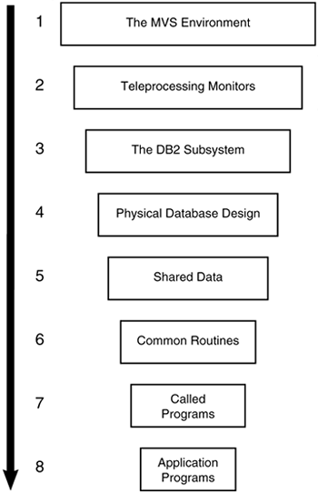
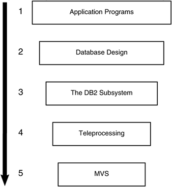

The Causes of DB2 Performance Problems
All performance problems are caused by change. Change can take many forms, including the following:
Physical changes to the environment, such as a new CPU, new DASD devices, or different tape drives. Installing a new version or release of the operating system. Changes to system software, such as a new release of a product (for example, QMF, CICS, or GDDM), the alteration of a product (for example, the addition of more or fewer CICS regions or an IMS SYSGEN), or a new product (for example, implementation of DFHSM). Also included is the installation of a new release or version of DB2, which can result in changes in access paths and the utilization of features new to DB2. Changes to the DB2 engine from maintenance releases, which can change the optimizer. Changes in system capacity. More or fewer jobs could be executing concurrently when the performance problem occurs. Environment changes, such as the implementation of client/server programs or the adoption of data sharing. Database changes. This involves changes to any DB2 object, and ranges from adding a new column or an index to dropping and re-creating an object. Changes to the application development methodology, such as usage of check constraints instead of application logic or the use of stored procedures. Changes to application code.
Performance problems are not caused by magic. Something tangible changes, creating a performance problem in the application. The challenge of tuning is to find the source of the change, gauge its impact, and formulate a solution.
See Figure 28.5. This hierarchy shows the order of magnitude by which each type of resource can affect DB2 performance. The resource with the highest potential for affecting performance is at the top. This does not mean that the bulk of your problems will be at the highest level. Although the operating system packs the largest wallop in terms of its potential for degrading performance when improperly tuned, it consists of only approximately 5% of the tuning opportunity.

Although the majority of your problems will be application-oriented, you must explore the tuning opportunities presented in the other environments when application tuning has little effect.
The following is a quick reference of the possible tuning options for each environment.
To tune OS/390, z/OS: |
|---|
Change the dispatching priority. | Modify swappability. | Add memory. | Upgrade CPU. | Implement data sharing. | Use an active performance monitor (enables tuning on the fly). | To tune the teleprocessing environments: |
|---|
Change the system generation parameters. | Tune the program definition (PSBs and PPT entries). | Modify the Attachment Facility parameters. | Add or change table entries. | Use an active performance monitor (enables tuning on the fly). | To tune the DB2 subsystem: |
|---|
Modify DSNZPARMs to increase or decrease the number of concurrent users, change lock escalation, increase EDM pool storage, and so on. | Issue SET LOG commands to change log buffers. | Issue ALTER BUFFERPOOL commands to change bufferpool sizes, increase or decrease bufferpool thresholds, and modify associated hiperpools. | Tune the DB2 Catalog, including dropping and freeing objects, executing MODIFY, reorganizing DB2 Catalog tablespaces and indexes, rebuilding the DB2 Catalog indexes, adding indexes to the DB2 Catalog, changing data set placement, moving the DB2 Catalog to a faster DASD device, and implementing data set shadowing. | Perform DSNDB07 tuning. | Use a tool to change DSNZPARMs on the fly. | To tune the DB2 database design: |
|---|
Modify the logical and physical model. | Modify and issue DDL. | Execute ALTER statements. | Ensure that proper parameters are specified. | Implement table changes. | Partition simple and segmented tablespaces. | Spread non-partitioned objects over multiple devices using PIECESIZE. | Add indexes. | REORG tablespaces. | REORG or REBUILD indexes. | Consider or reconsider data compression. | Denormalize the database design. | To tune shared data: |
|---|
Denormalize the database design. | Add redundant tables. | To tune programs: |
|---|
Perform SQL tuning. | Use triggers to enforce business rules. | Implement stored procedures and user-defined functions as needed. | Reduce network requests in client/server applications. | Tune the high-level language (such as COBOL or 4GL). | Use a program restructuring tool. | Run RUNSTATS. | Execute EXPLAIN, modify your code, and REBIND. | Use the OPTIMIZE FOR n ROWS clause. | Consider activating query parallelism. | Change locking strategies. | Change the DB2 Catalog statistics and REBIND. | Implement optimization hints. | Use a testing tool to provide what if testing and tuning. | Use a tool to sample the application's address space as it executes. |
It is important not to confuse the issue, so I will present another tuning hierarchy. Figure 28.6 outlines the order in which DB2 problems should be investigated. Start at the top and work your way down. If you are sure that your MVS environment has not changed, investigate the teleprocessing monitor. Only when you have tried all avenues of tuning at one level should you move to the next. Of course, this process should be used only when the cause of the problem is not obvious. If you just implemented a new application yesterday and the first time it runs problems occur, you most likely can assume the problem is in the new application and begin looking there.

|
Implement at your shop a standard that incorporates tuning hierarchies similar to the ones shown in Figures 28.5 and 28.6.
Document your tuning standard, stating that each component of the DB2 tuning hierarchies should be considered when DB2 performance problems are encountered. Include in the document all the tools that can be used. If possible, get managerial agreement from all areas involved to reduce the friction that can occur when diverse groups attempt to resolve a DB2 tuning problem. |
|